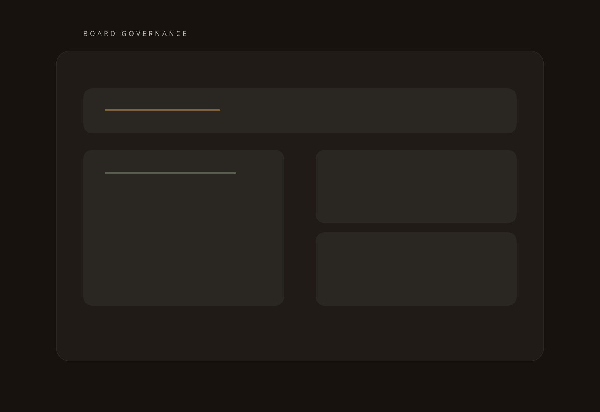

Board Portal
One governance surface for meetings, papers, and decision history.
The governance layer is framed as the secure operating shell for OBA Group board packs, resolutions, committee workstreams, and archived meeting records.

Board Portal
The governance layer is framed as the secure operating shell for OBA Group board packs, resolutions, committee workstreams, and archived meeting records.